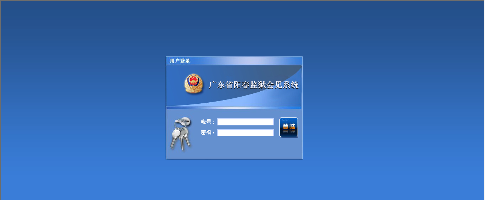
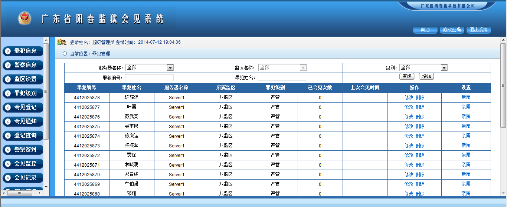
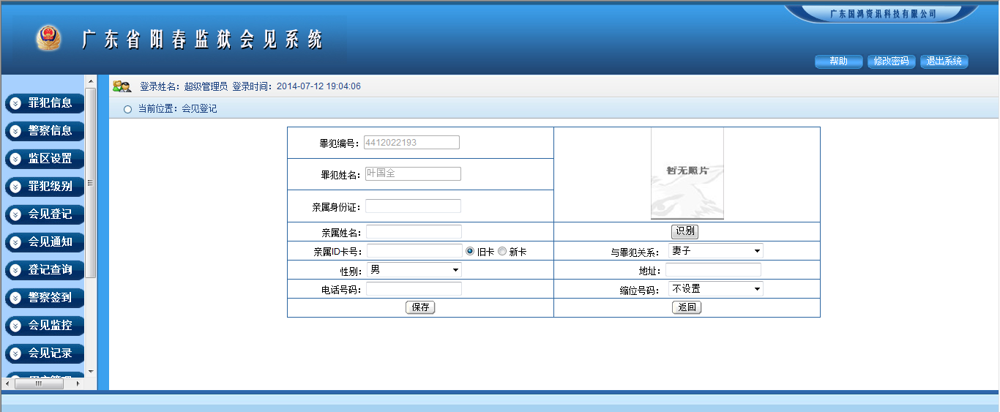
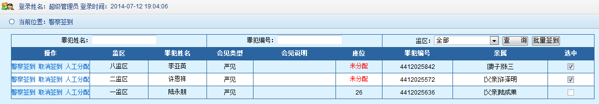

广东省阳春监狱会见系统
打开IE，在地址栏输入系统访问地址，鼠标左键单击转到按钮，弹出系统登录界面，
如下图所示：

如上图所示，输入账号、密码，确认后鼠标单击登录按钮或键盘单击回车键，即可登录系统，如下图所示：
图1-1 系统登录后主界面
在系统运行之前，首先要对系统进行初始化配置，如：系统参数、监区设置、线路设置、罪犯级别。
系统参数中只有一条初始化记录，在客户端中可按照监狱实际情况进行配置。如图1-1所示，在窗口左边单击“系统参数”按钮，弹出下图所示页面：
图2-1 系统参数
如图2-1所示，鼠标单击“配置”按钮，弹出下图所示页面：
服务器名称：初始化设置好后，不要随意修改。修改后，可能导致程序无法运行。
服务器IP：初始化设置好后，不要随意修改。修改后，可能导致程序无法运行。
状态端口：初始化设置好后，不要随意修改。修改后，可能导致程序无法运行。
监听端口：初始化设置好后，不要随意修改。修改后，可能导致程序无法运行。
录音网络地址：初始化设置好后，不要随意修改。修改后，可能导致程序无法运行。
监狱可根据实际会见电话线路部署情况增加监区、删除监区、修改监区，及会见星期设置，如图1-1所示，鼠标单击“监区设置”按钮，弹出下图所示页面：
鼠标单击“增加”按钮，弹出下图所示页面：
如上图所示，输入监区编号、监区名称，选择服务器名称、特殊监区（只有超级管理员才能查看特殊监区的相关信息），确认输入后，鼠标单击“保存”按钮，即可增加一个监区。返回上一级，按“返回”按钮即可。
鼠标单击所需修改监区的“修改”按钮，弹出下图所示页面：

如上图所示，输入所要修改的监区名称，重新选择服务器名称、特殊监区，确认输入后，鼠标单击“保存”按钮，即修改了该监区。返回上一级，按“返回”按钮即可。
鼠标单击所需删除监区的“删除”按钮，弹出下图所示对话框：

如上图所示，确定删除后，鼠标单击“确定”按钮，即可删除一个监区。
在线路设置中对线路进行初始化配置，配置实际物理会见电话线路对应的窗口号，会见电话线路数量与语音板卡实际通道数量相关，显示在线路设置页面中。如图1-1所示，在窗口左边单击“线路设置”按钮，弹出下图所示页面：
图2-3 线路设置
每路会见电话需要与实际对应的窗口号匹配，这就需要对线路进行配置，如上图所示，鼠标单击“配置”按钮，弹出下图所示页面：
如上图所示，根据实际物理线路输入窗口名称，及读卡器的网络地址（如没有读卡器，可不用输入读卡器的网络地址），选择线路状态（选择关闭，该窗口不能正常会见，分配座位时，该窗口将不可用），确认输入后，单击“保存”按钮即可。返回上一级，按“返回”按钮即可。
不同犯人，可以为其设置不同的级别（级别可添加），不同的级别每月会见次数、每次会见时长、每月亲情电话次数、每次亲情电话时长可以独立修改、删除。如图1-1所示，在窗口左边单击“罪犯级别”按钮，弹出下图所示页面：
图2-4 罪犯级别
鼠标单击“增加”按钮，弹出下图所示页面：
如上图所示，输入级别编号、级别名称、每月会见次数、每次会见时长、每月亲情电话次数、每次亲情电话时长。确认输入后，鼠标单击“保存”按钮，即增加一个级别。返回上一级，按“返回”按钮即可。
鼠标单击所需修改级别的“修改”按钮，弹出下图所示页面：
如上图所示，重新输入级别名称、每月会见次数、每次会见时长、每月亲情电话次数、每次亲情电话时长。确认输入后，鼠标单击“保存”按钮，即修改一个级别（注意：修改后级别中的每月会见次数和每次会见时长，在下个月初才能生效）。返回上一级，按“返回”按钮即可。
鼠标单击所需删除级别的“删除”按钮，弹出下图所示对话框：
如上图所示，确定删除后，鼠标单击“确定”按钮，即可删除一个级别。
只有管理员组人员和超级管理员才有用户管理和用户组管理权限；只有超级管理员才能给管理员组添加管理员，但是不能修改和删除管理员组，也不能为其修改权限，管理员组成员不能查询管理员组其他成员信息；假设一个监狱分为若干个部门，我们可以为每个部门分别建立一个用户组，然后为每个用户组赋予管理监区的权限，每个用户组可以管理一个或者多个监区，可以为每个用户组赋予访问功能权限。如图1-1所示，在窗口左边单击“权限管理”按钮，弹出下图所示页面：
图3-1 用户组管理
鼠标单击“增加”按钮，弹出下图所示页面：

如上图所示，输入用户组编号、用户组名称，确认输入后，鼠标单击“保存”按钮，即可增加一个用户组（相当如一个部门）。返回上一级，按“返回”按钮即可。
鼠标单击所需修改用户组的修改按钮，弹出下图所示页面：
如上图所示，用户组编号不可修改，重新输入用户组名称， 确认输入后，鼠标单击“保存”按钮，即修改了该用户组。返回上一级，按“返回”按钮即可。
鼠标单击所需删除用户组的“删除”按钮，弹出下图所示页面：
如上图所示，确定删除后，鼠标单击“确定”按钮，即可删除一个用户组。注意：用户组删除后，组底下的组成员也将被删除。
用户权限可以根据业务需要自由定制，以确保系统数据的安全性，鼠标单击所需设置权限用户组的“设置权限”按钮，弹出下图所示页面：
如上图所示，鼠标单击选择监区权限中的监区（可以选择多个）、功能权限中的功能（可以选择多个），确认选择后，鼠标单击“保存”按钮，即完成权限设置。返回上一级，按“返回”按钮即可。
鼠标单击所需查看用户组成员的“查看组成员”按钮，弹出下图所示页面：

如上图所示，页面显示的是当前查看用户组的组成员。返回上一级，按“返回”按钮即可。
超级管理员可以创建管理员和普通用户账户；管理员只可以创建普通用户账户，普通用户不可以创建账户。如图1-1所示，在窗口左边单击“用户管理”按钮，弹出下图所示页面：
图3-2 用户管理
鼠标单击“增加”按钮，弹出下图所示页面：
如上图所示，输入登录帐号、所在部门、真实姓名，选择用户组，确认输入后，鼠标单击“保存”按钮，即可增加一个用户（新增加用户，默认密码为123456）。返回上一级，按“返回”按钮即可。
鼠标单击所需修改用户的“修改”按钮，弹出下图所示页面：

如上图所示，重新输入用户姓名、用户所属部门，选择用户所属用户组，确认输入后，鼠标单击“保存”按钮，即完成修改。返回上一句，按“返回”按钮即可。
鼠标单击所需删除用户的“删除”按钮，弹出下图所示对话框：
如上图所示，确定删除后，鼠标单击“确定”按钮，即可删除一个用户。
鼠标单击所需重置密码用户的“重置密码”按钮，弹出下图所示对话框：
如上图所示，鼠标单击“确定”按钮，密码即重置，重置后密码为123456。
罪犯管理包括对犯人及亲属信息的增加、修改、删除、查询，支持批量导入、导出犯人及亲属数据。如图1-1所示，在窗口左边单击“罪犯信息”按钮，弹出下图所示页面：
图4-1 罪犯信息
对犯人信息的增加、删除、修改、查询
如图4-1所示，鼠标单击“增加”按钮，弹出下图所示页面：

如上图所示，输入犯人编号、犯人姓名、犯人IC卡号，选择服务器名称、所属监区、犯人级别、会见级别。确认输入后，鼠标单击“保存”按钮，即可增加一个犯人信息。返回上一级，按“返回”按钮即可。
如图4-1所示，选择监狱、监区、级别，输入犯人编号、犯人姓名，确认输入后，鼠标单击“查询”按钮，即可查询到犯人信息，支持各类组合条件查询，如下图所示：

鼠标单击所需修改犯人信息的“修改”按钮，弹出下图所示页面：
如上图所示，重新输入犯人姓名、犯人IC卡号、会见剩余次数，选择服务器、所属监区、犯人级别、会见级别、是否重点监控。确认输入后，鼠标单击“保存”按钮，即可修改犯人信息。返回上一级，按“返回”按钮即可。
鼠标单击所需删除犯人信息的“删除”按钮，弹出下图所示对话框：
如上图所示，确定删除后，鼠标单击“确定”按钮，即可删除一个犯人信息。
注意：删除犯人信息的同时，犯人对应的家属信息也同时删除。
对亲属信息的增加、修改、删除
如上图所示，鼠标单击“亲属”按钮，弹出下图所示页面：
鼠标单击“增加”按钮，弹出下图所示页面：
如上图所示，输入亲属身份证、亲属姓名、亲属ID卡号、地址、电话号码，选择与犯人关系、性别、缩位号码（如有二代身份证阅读仪，可直接从身份证上获取到相应信息）。确认输入后，鼠标单击“保存”按钮，即可为犯人增加一个亲属信息。返回上一级，按“返回”按钮即可。
鼠标单击“修改”按钮，弹出下图所示页面：
如上图所示，重新输入亲属身份证、亲属姓名、亲属ID卡号、地址、电话号码，重新选择与犯人关系、性别、缩位号码（如有二代身份证阅读仪，可直接从身份证上获取到相应信息）。确认输入后，鼠标单击“保存”按钮，即可修改一个亲属信息。返回上一级，按“返回”按钮即可。
鼠标单击“删除”按钮，弹出下图所示对话框：
如上图所示，确定删除后，鼠标单击“确定”按钮，即可删除一个犯人亲属信息。
在“会见登记”菜单中，主要包括会见登记、修改会见登记、取消会见登记、重新打印会见准见证等功能，如图1-1所示，在窗口左边单击“会见登记”按钮，弹出下图所示页面：
图5-1 系统登录后主界面
在会见登记中，主要包括家属身份证识别，以及对要会见的家属信息进行编辑等操作。如上图所示，鼠标单击“登记”按钮，弹出下图所示页面：
如上图所示，在“罪犯姓名”输入框中，输入要会见的罪犯姓名（支持模糊查询），确认输入后，鼠标单击“查询”按钮，即可查询出相应的罪犯信息，支持各类组合条件查询。返回上一级，按“返回”按钮即可。如下图所示：
如上图所示，点击查询后，默认会查询出数据库中已存在的罪犯信息和与之对应的家属信息，如果本次来会见的家属信息在家属显示区没有显示出来，说明该家属信息没有在系统中录入，那么就需要将该家属信息录入到系统中，此时鼠标双击查询出来的罪犯信息行，弹出如下图所示页面：
如上图所示，鼠标单击增加按钮，弹出下图所示页面：

如上图所示，在进到这个页面后，将二代身份证放在二代身份证读卡器的识别区，二代身份证上的相关信息将会自动填入到相应的区域中，手工选择与罪犯关系；如果没有二代身份证读卡器，那么就需要手工填入亲属身份证、亲属姓名、与罪犯关系、地址、性别等信息，填入信息确认无误后，鼠标单击“保存”按钮，回到下图所示页面：
如上图所示，在该页面中也可对有误的家属信息进行修改和删除，鼠标点击对应的“修改”和“删除”按钮即可。家属信息编辑完成后，鼠标单击“返回”按钮，回到会见登记主页面，如下图所示：
如上图所示，鼠标单击罪犯信息行，点击选中后背景呈现为白色，再鼠标单击家属信息行（可选择多条家属信息），点击选中后背景呈现为白色，对于选中的行，行首复选框会是选中状态，会见时长会自动填入默认会见时长（也可重新填入会见时长，时间单位为分钟），操作完成后，如下图所示：
如上图所示，确认所为操作完成后，鼠标单击“提交”按钮，将弹出打印对话框，如下图所示：
如上图所示，鼠标单击“打印”按钮，打印机将会打印出会见准见证，页面将回到下图所示页面：
如上图所示，此时整个会见登记操作已完成。
取消会见登记功能设计的初衷是为了解决：1、有的家属登记后，中途因为某些原因离开了，或者罪犯不允许会见，需要取消会见登记，释放他所占用的座位。2、会见登记操作人员登记错误，或者本来是两个人会见，但是登记信息中只添加了一个人的信息，需要重新登记。
如上图所示，鼠标单击选中要取消的会见登记信息，单击选中后，该条信息背景色呈现为白色，再鼠标单击“取消登记”按钮，弹出下图所示对话框：
如上图所示，鼠标单击“确认”按钮，弹出下图所示页面：
如上图所示，在取消原因输入框中输入取消的原因（可不填），再鼠标单击“保存”按钮，该条登记信息被取消，占用的座位被释放。
重新打印会见准见证功能设计的初衷是为了解决：家属将会见准见证丢失的情况。
如上图所示，鼠标单击选中要重新打印的会见登记信息，单击选中后，该条信息背景色呈现为白色，再鼠标单击“打印准见证”按钮，弹出下图所示打印对话框：
如上图所示，鼠标单击“打印”按钮，打印机将会打印出会见准见证。
在服刑人员会见过程中，在“会见监控”菜单中，能对其进行实时监听、停止监听、切断。如图1-1所示，在窗口左边单击“会见监控”按钮，弹出下图所示页面：
图6-1 会见监控
如上图所示，状态显示为通话中，表示此线路正在会见，犯人监区、犯人姓名、会见人信息、剩余时间都会显示出来，此时即可对该线路进行监听、停止监听、切断、实时录入监听注释。
如上图所示，鼠标单击“监听”按钮，从耳机或者音响中，就能听到服刑人员和亲属之间的通话声音，此时“停止监听”、“切断”按钮将被激活，颜色呈现为暗红。如下图所示：
如上图所示，正在实时监听服刑人员和亲属之间的通话，此时鼠标单击“停止监听”按钮，即可停止对其监听。“停止监听”、“切断”按钮即被锁定，颜色呈现为原来的黑色。如下图所示：
如果正在对会见电话进行实时监听，鼠标单击“切断”按钮，即可切断服刑人员和亲属之间的通话（注意：只有在监听中，才能切断电话）。
在会见记录中，可查看到所有犯人会见通话的详细信息，同时可回放通话录音录像、下载录音录像到本地，各监区管理员可根据权限下载录音录像文件。如图1-1所示，在窗口左边单击“会见记录”按钮，弹出下图所示页面：
图6-2 会见记录
如上图所示，选择通话开始时间、通话结束时间、服务器名称、犯人监区、会见类型，输入犯人编号、犯人姓名、亲属姓名。确认输入后，鼠标单击查询按钮，即可查询到犯人会见记录，系统支持各类组合条件查询。如下图所示：
如上图所示，鼠标单击“播放录音录像”按钮，此时页面右下角将弹出下图所示媒体播放器：
如上图所示，用鼠标点击按钮即可实现播放、暂停播放、快进、快退、控制音量功能。
如上图所示，鼠标单击“下载录音”按钮，弹出下图所示对话框：
如上图所示，鼠标单击“保存”按钮，即可弹出录音文件另存为对话框，如下图所示：

如上图所示，选择好录音存放地址后，鼠标单击“保存”按钮，录音文件即可下载到本地。
在会见通知中，根据帐号权限，可以看到本监区当前已登记的罪犯信息和与之对于的家属信息。如图1-1所示，在窗口左边单击“会见通知”按钮，弹出下图所示页面：
当登记室工作人员提交会见登记后，在会见通知中，能自动生成一条会见登记记录，当监区值班干警鼠标点击“未通知”后，“未通知”将变成“已通知”，会见室值班干警就能知道已经通知到了相应监区的值班干警。
在会见通知中，当值班干警鼠标点击“未进入”后，“未进入”将变成“已进入”，会见室值班干警就能知道罪犯已到达会见室，会见室值班干警再广播通知一楼家属上二楼会见。
当服刑人员到达会见室后，值班干警在“警察签到”菜单中给服刑人员分配座位。图1-1所示，在窗口左边单击“警察签到”按钮，弹出下图所示页面：

如上图所示，鼠标点击“人工分配”按钮，弹出下图所示页面：
如上图所示，在“座位名称”下拉框中选择座位，再警察刷卡后点击保存，即可分配座位。如下图所示：
如上图所示，鼠标点击“警察签到”按钮，页面跳转至警察刷卡页面，如下图所示：

如上图所示，警察刷卡后，点击保存按钮，系统将自动为该罪犯分配一个座位。
如上图所示，鼠标点击“取消签到”按钮，弹出下图所示对话框：
如上图所示，在弹出的对话框中鼠标点击“确定”按钮，即可取消座位分配。
如上图所示，鼠标单击选中未分配座位的会见登记信息，如下图所示：

如上图所示，鼠标单击选中后，再点击批量签到按钮，弹出下图所示对话框：
如上图所示，警察刷卡后，点击保存按钮，即可自动批量分配座位。
单击窗口右上方“修改密码”按钮，弹出下图所示窗口：

如上图所示，输入原始密码、新密码、确认新密码（输入和新密码一样的密码），确认后单击确定按钮即可。
单击窗口右上方“退出系统”按钮，弹出下图所示对话框：
如上图所示，如确定退出，单击“确定”按钮即可。
第